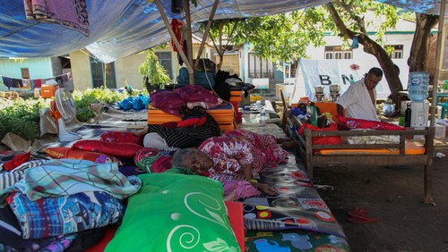

Bantuan untuk Korban Gempa Flores Timur Terus Berdatangan

Jakarta, HFYNEWS -- Pemerintah Provinsi Nusa Tenggara Timur menyalurkan bantuan logistik berupa beras dan ikan kaleng untuk korban gempa bumi di Kabupaten Flores Timur, NTT, di tengah kondisi warga yang masih dilanda gempa berulang.
"Logistik Pemrov kemarin sudah tiba dan diterima di gudang logistik (BPBD) Flores Timur sebanyak 2 ton Beras dan ikan 850 kaleng," kata Kepala Bidang Kedaruratan dan Logistik BPBD Flores Timur, Ita Tukan kepada HFYNEWS, Selasa (14/4/2026).
Ita mengagakan, distribusi logistik kepada para pengungsi akan dilakukan Rabu (15/4).
"Pendistribusian akan dilakukan besok ke wilayah terdampak," imbuhnya.
Sebanyak 2.019 warga mengungsi akibat gempa dangkal magnitudo 4,7 yang mengguncang Kabupaten Flores Timur, Rabu (8/4). Sebanyak 368 unit rumah rusak yang tersebar di 14 desa di dua kecamatan.
"18 orang mengalami luka ringan," pungkasnya.
Warga Mengaku Stres akibat Gempa Berulang
Sementara itu, Mel Mekeng, pekerja kantoran di Waiwerang Kota, Pulau Adonara, Kecamatan Adonara Timur mengaku stres karena gempa terus terjadi hingga Minggu (12/4/2026).
"Sudah enam kali, pusing. Asli kami stres. Kami lari. Ada beberapa teman yang memilih diam karena sudah bosan. Kami panik karena kami tidak bisa prediksi getaran cepat atau lama. Dari hari Rabu sampai sekarang ini durasi getarannya 5 sampai 6 detik," ujarnya, Minggu sore.
PVMBG Jelaskan Penyebab Gempa Susulan
Kepala Balai Pemantauan Gunung Api dan Mitigasi Bencana Geologi Wilayah Nusa Tenggara (NTT-NTB) PVMBG, Badan Geologi, Ghele Radja Arios menjelaskan gempa berulang terjadi akibat batuan di bawah permukaan yang masih mencari keseimbangan.
"Gempa yang terjadi berulang kali, atau gempa susulan (aftershocks), terjadi karena batuan di bawah tanah sedang mencari keseimbangan baru setelah pergeseran besar," ujar Arios saat dikonfirmasi detikBali, Sabtu (11/4).
Arios mengatakan, saat gempa melepaskan energi terjadi patahan dan patahan tersebut tidak hilang.
"Saat gempa utama melepaskan energi masif, tekanan (stress) pada patahan tidak hilang seketika, melainkan berpindah ke area sekitarnya dan memicu retakan-retakan kecil tambahan," imbuhnya.
Ia menambahkan, pergerakan lempeng tektonik berlangsung secara konstan.
"Energi yang terkumpul pada bidang batuan yang kasar (asperity) seringkali dilepaskan secara bertahap melalui serangkaian getaran bukan dalam satu kali kejadian saja," tandasnya.